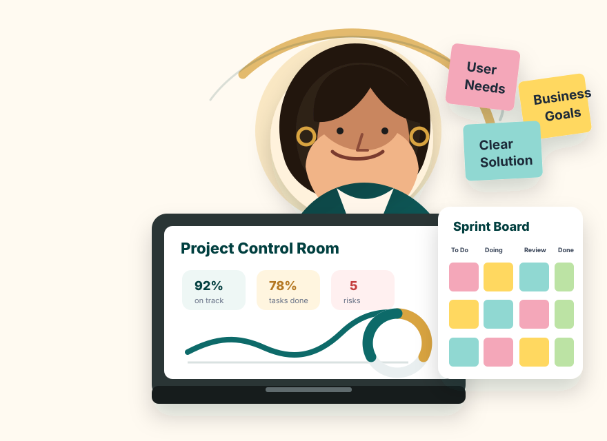
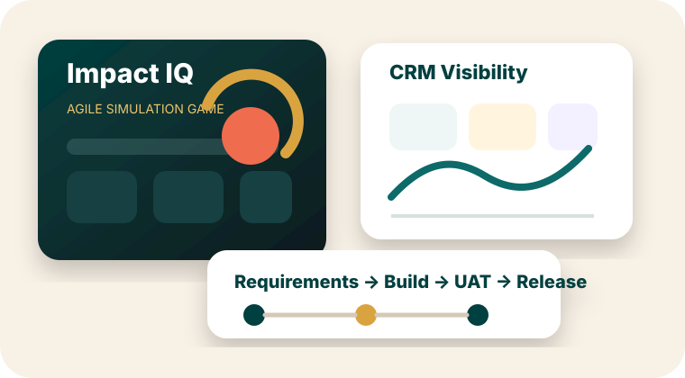
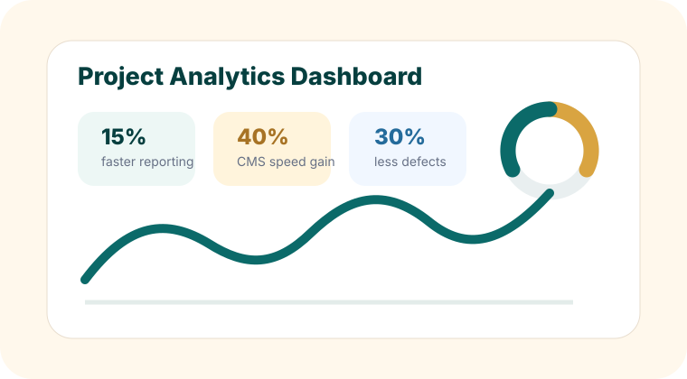
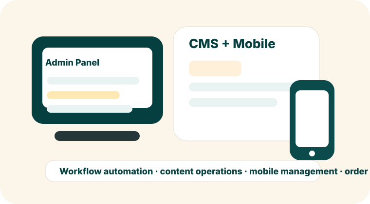
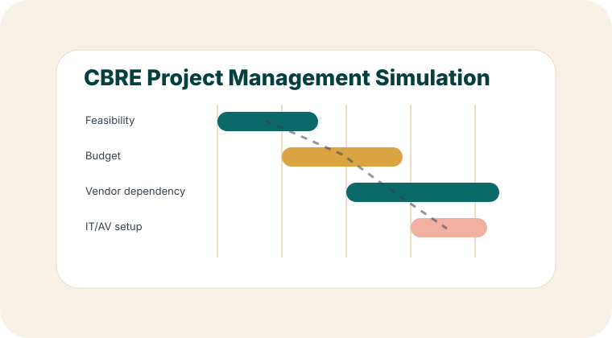
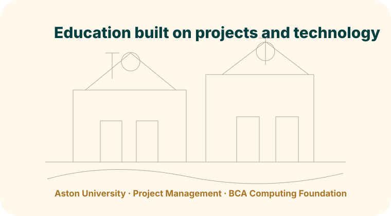

IT Business Analyst
Requirements gathering, functional specs, user stories, acceptance criteria, process mapping, stakeholder clarification and UAT.
MSc Project Management student at Aston University and former IT Business Analyst with experience across CRM, CMS, secure mobile app and e-commerce projects for international client teams. I translate vague business needs into requirements, workflows, user stories, UAT plans, sprint inputs and delivery actions.

This portfolio is built for IT Business Analyst, Project Management, Product Owner and consulting-style digital transformation roles. Different labels, same core value: organise unclear work and make delivery measurable.
Requirements gathering, functional specs, user stories, acceptance criteria, process mapping, stakeholder clarification and UAT.
Delivery timelines, risk and issue tracking, sprint alignment, documentation, reporting, coordination and operational follow-through.
Backlog support, user-focused outcomes, product feature definition, roadmap thinking, sprint refinement and continuous improvement.
Problem structuring, root-cause thinking, process improvement, data-informed recommendations and senior update materials.
Not in a slogan-on-a-mug way. In a practical way: understand the business issue, shape the requirement, coordinate the team, test the solution and support adoption.
Gather requirements, map processes, identify pain points and convert business needs into clear functional documentation and user stories.
Support sprint planning, backlog discussions, Kanban and Scrum workflows, risk reviews, acceptance criteria and continuous improvement.
Coordinate stakeholders, developers, testers and users so project work moves from vague intention to useful delivery without collapsing into theatre.
IT projects, retail operations and live events look different from outside. Inside, they all punish poor planning immediately.
Each card shows the problem area, my role and the outcome. Because “worked on project” is doing a lot of unpaid emotional labour.

Role: Product Owner & Developer. Built a web-based Agile simulation platform to help users understand sprint decisions, delivery trade-offs, stakeholder pressure and project risk.

Context: India-based CRM project supporting debt recovery workflows and management visibility.

Context: USA-based CMS platform and app project focused on improving client operations and content publishing.

Simulation: Completed Forage virtual experience focused on showroom construction project planning.
Led requirement analysis and collaborated with development teams during Agile sprints for a secure mobile management application, from FRD and user stories through sprint execution and successful deployment.
Worked with developers and stakeholders to refine product features, automate approval and order workflows, improve order processing accuracy and strengthen admin efficiency for an Australia-based client.
Grouped around real delivery work: analysis, product, project coordination, data, documentation and stakeholder communication.

Birmingham, UK · Expected Sept 2026
Modules include Agile Project Management, Global Risk & Resilience, Consultancy Practice, Predictive Analytics, Simulation for Project Management and Cost Analysis.
India · 2021 - 2023 · GPA 9.0/10 · 86%
Computing foundation covering software development, database management, web technologies and systems analysis.
AI Tools Workshop by be10x, June 2025. Developing consultancy and leadership skills through Aston's Global Advantage module. Interested in APM accreditation. Co-host of Disaster Dialogue podcast on global risks, resilience and crisis management.